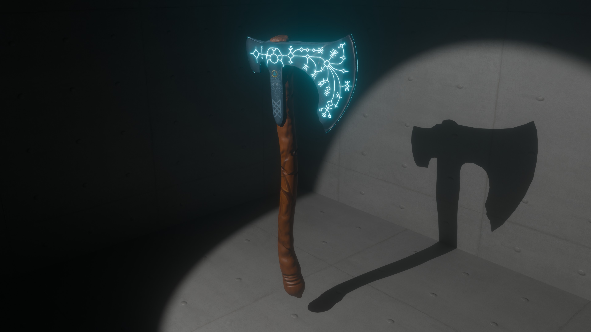
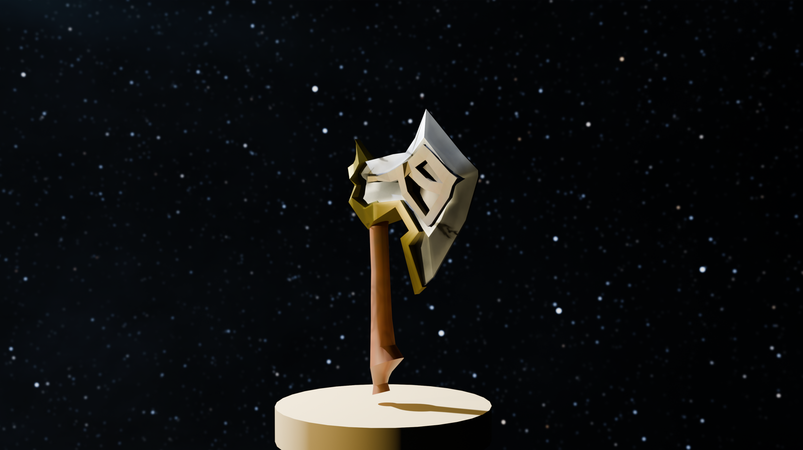
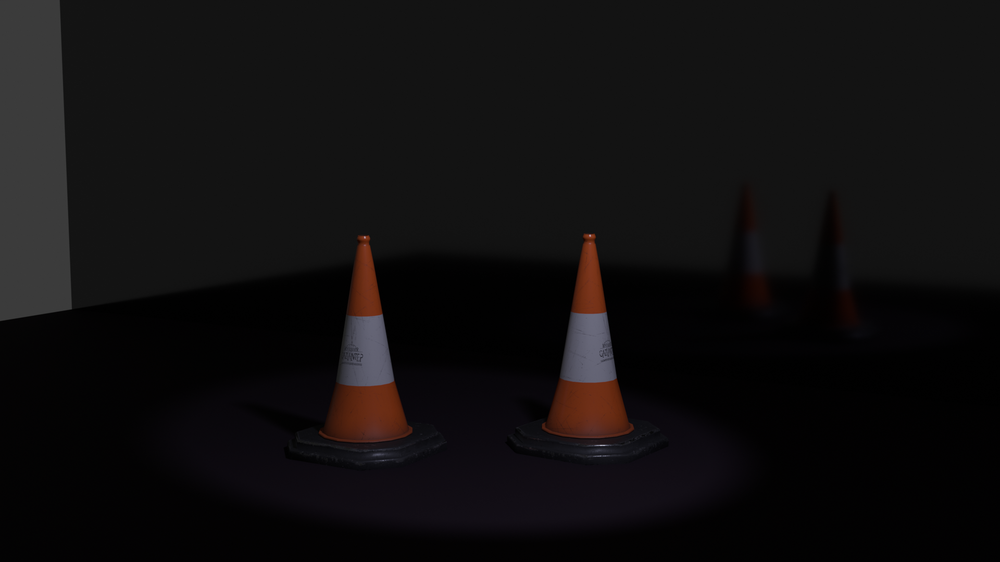

DO YOU LIKE DONUT???
LOOKS DELICIOUS, RIGHT?
BUT THEY AREN'T REAL
CREATED BY ME IN BLENDER
I first modeled it as a high-poly asset in Blender, then baked it into a low-poly version. I created the textures myself using Procreate and Adobe Photoshop. The neon blue engravings on the axe were also designed in Photoshop.
I designed this axe using Blender and added creative details of my own. It's a low-poly model, and I created the textures partly in Photoshop and partly by applying materials directly in Blender.
This model was created in Blender and textured in Adobe Substance, which helped achieve a realistic and detailed appearance.
All assets in this laboratory model were created by me in a low-poly style. The scene was featured in XIR, a game I was involved in during its development. (Click on the image to examine the model in detail.)
All the elements in this desk and chair scene were fully designed and modeled by me in a low-poly style. The scene is part of a custom low-poly house I created, and it was featured in XIR, a game I took part in developing. (Click on the image to examine the model in detail.)
The books, coins, and pencil in this scene were all designed by me in a low-poly style. While I used pre-made textures for the book covers, the rest of the designs are entirely my own. (Click on the image to examine the model in detail.)